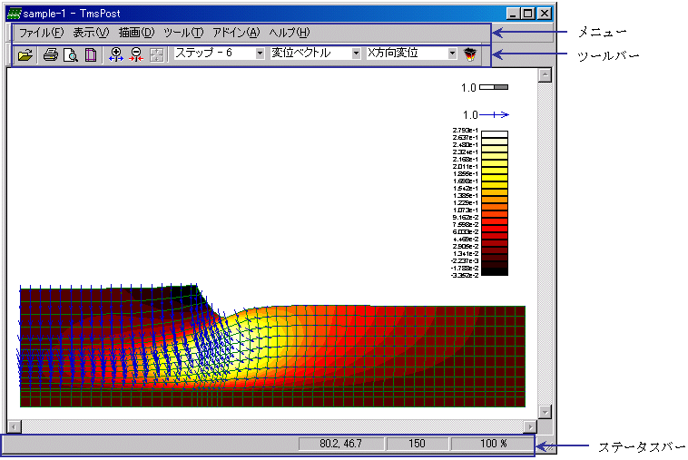

3-2-1.画面構成
Tms Postを起動すると下図のようなメイン画面が表示されます。起動直後の画面がプログラムのメイン画面となります。各部の名称と機能を簡単に説明します。

<メニュー>
メニューやツールバーを使って必要な操作を行います。メニューにはコマンドの一覧が表示されます。コマンドの中には、コマンド名の横にイメージが表示されているものもあり、そのイメージによってコマンドを識別することができます。
<ツールバー>
ツールバーには、イメージの付いたボタン、メニュー、またはその両方が表示されます。これらのボタンに付いているイメージは、対応するメニュー コマンドの横に表示されているイメージと同じものです。
<ステータスバー>
ステータス バーには、ウィンドウに表示しているグラフの情報が表示されます。